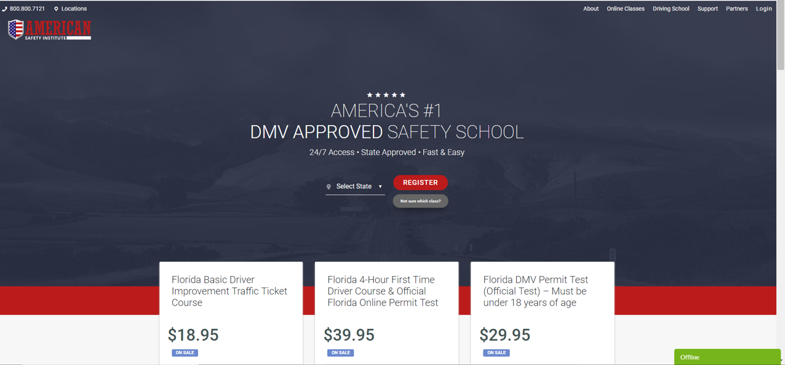
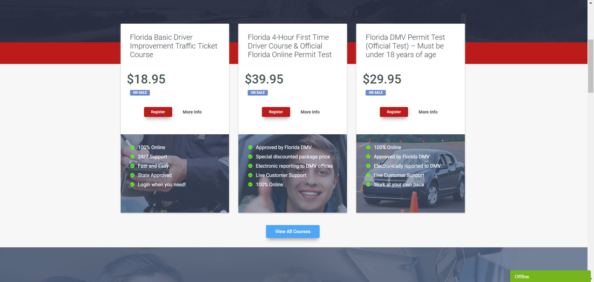
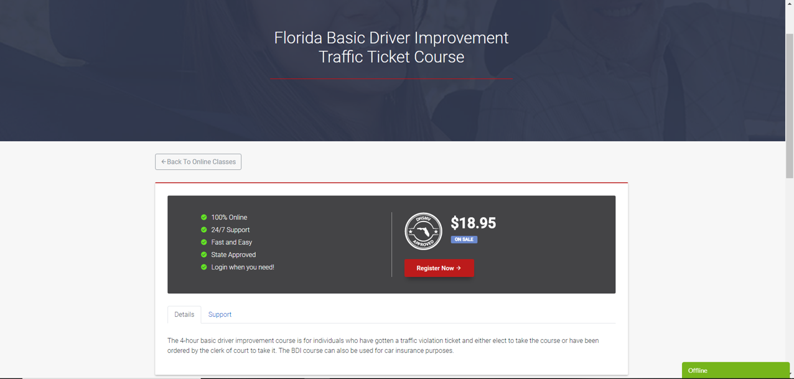

The company was working on a project for the American Safety Institute, local to Tallahassee. The lead web developer had already established the template assigned me to assist him with CSS fixes through the site.
I implemented bug fixes with the main page by editing the CSS so the navigation bar is responsive and collapses when the screen resolution was small enough to make the site mobile responsive. I also adjusted the sizing and centering of the header.
I adjusted the CSS here to make the three columns uniform as the screen resolution changed
I adjusted the header size and alignment here. I also adjusted the spacing of the course block to make it more uniform and responsive.